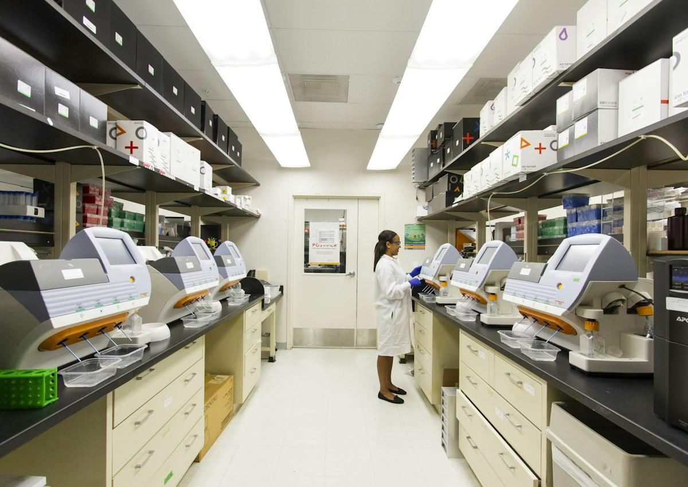

Monural deck
Строгая продуктовая презентация для pharma-коммуникации: структура аргументов, медицинский тон, визуальная ясность и аккуратная подача данных.

Медицинская презентация должна быть точной и читаемой
В pharma-коммуникации нельзя перегружать аудиторию визуальным шумом. Слайды должны помогать быстро понять продукт, контекст применения, аргументы, ограничения и ключевые сообщения для профессиональной аудитории.

Визуальный язык должен поддерживать доверие: чистота, порядок, медицинская точность и спокойная подача.
Healthcare-визуалы помогают сохранить профессиональный тон без избыточной эмоциональности.
Каждый слайд отвечает на один профессиональный вопрос
В pharma-deck особенно важно не смешивать несколько аргументов на одном экране. Один слайд — один вопрос: что происходит, почему важно, как работает продукт, какие данные подтверждают тезис, что нужно запомнить.
Строгость не должна выглядеть скучно
Мы используем спокойную палитру, крупную типографику, аккуратные таблицы, схемы и data-блоки. Так презентация остаётся деловой, но не превращается в сухой технический документ.

Data-блоки оформляются так, чтобы их можно было быстро объяснить на встрече или в деловой коммуникации.
Финальная подача должна сохранять баланс между медицинской точностью и понятностью для аудитории.
Продуктовый deck с профессиональным тоном
Итог — презентация, которая помогает объяснить pharma-продукт спокойно, точно и убедительно для деловой или медицинской аудитории.
Что входит в презентацию
Структура deck, продуктовая логика, слайды аргументации, data-блоки, медицинский visual tone, финальные тезисы и CTA для коммуникации.